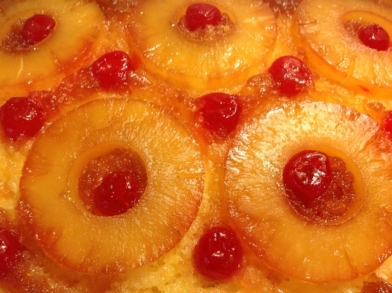

HOME
Pineapple Upside-Down Cake

Description
Pineapple upside-down cake is a gorgeous retro dessert that delights all ages! This easy recipe uses a cast iron skillet to bake the tender sweet cake and perfectly caramelized pineapple and cherries.
Ingredients
- Butter: This pineapple upside-down cake recipe starts by melting butter in a cast iron skillet.
- Brown sugar: Brown sugar is sprinkled over the melted butter in the skillet, resulting in a perfectly caramelized topping.
- Fruit: You'll need a can of pineapple slices and jarred maraschino cherries.
- Cake mix: A package of cake mix is combined with pineapple juice, oil, and egg whites. Some reviewers suggest using a yellow or lemon cake mix.
Steps
- Preheat the oven to 350 degrees F (175 degrees C)
- Drain canned pineapple into a 1-cup measure. Add water if needed to measure 1 cup. Set aside juice and 9 pineapple rings for the cake. Set any remaining juice and pineapple rings aside for another use.
- Melt butter in a 12-inch cast iron skillet over medium-high heat.
- While butter is melting, combine cake mix, reserved 1 cup pineapple juice, vegetable oil, and egg whites in a mixing bowl. Beat with an electric mixer on medium speed for 2 minutes.
- Remove melted butter from the heat and sprinkle brown sugar evenly over top until all the butter is covered. Arrange 8 pineapple rings around the outer edge of the skillet and place the remaining pineapple ring in the center without overlapping. Place a maraschino cherry into the center of each pineapple ring; pour cake batter on top.
- Bake in the preheated oven until a toothpick inserted into the cake comes out clean, about 40 minutes.
- Remove from the oven and let cool in the skillet for 10 minutes; don't let the cake cool too much or it will stick to the pan.
- Run an offset spatula around the edges to gently loosen cake. Place a plate over the skillet, then flip and carefully turn the warm cake out onto a plate. Transfer any fruit or glaze that sticks in the skillet back to the cake.